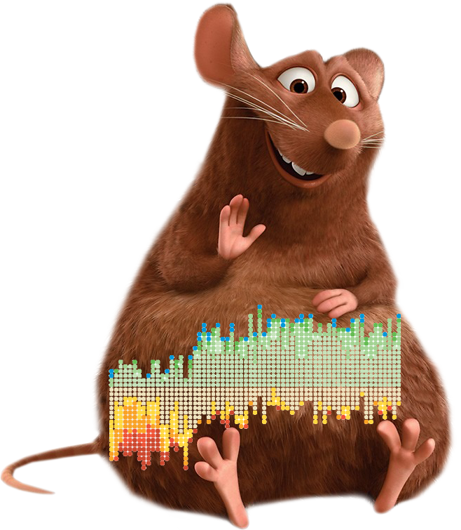

Grupo 30: Datatouille

¿Por qué un sitio web en vez de ver directamente el repositorio?
Para tener acceso a los .html de cada notebook, con las corridas de punta a punta, y trabajar con los .ipynb en limpio (así se evitan merge conflicts, se ven claros los commits, etc)